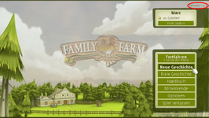
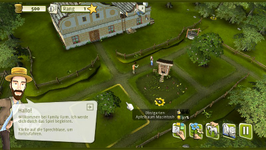
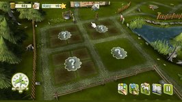
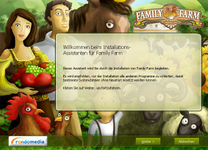

Family Farm
Dieser Artikel wurde für die folgenden Ubuntu-Versionen getestet:
Ubuntu 16.04 Xenial Xerus
Ubuntu 14.04 Trusty Tahr
Zum Verständnis dieses Artikels sind folgende Seiten hilfreich:
Wine installieren und benutzen, optional
Grundlegende Benutzung von Wine, optional
Desura bedienen (opional)
Family Farm  ist eine Bauernhof-Simulation, welche im 19. Jahrhundert angesiedelt ist. Man schlüpft in die Rolle eines Landwirts und erledigt unterschiedliche Arbeiten. Hierunter fallen unter anderem der Ackerbau, die Viehzucht, das Kultivieren von Obst und Verschönerungen an der Farm. Trotz der Arbeit sollte man sich um das Wohl und die Bedürfnisse der Hofgemeinschaft kümmern. Die wechselnden Wetterverhältnisse und die Jahreszeiten zeigen ihre Auswirkungen auf Flora und Fauna… Je nach Erfahrungslevel stehen dem Spieler in den jeweiligen Rängen unterschiedliches Saatgut, Hilfsarbeiter und neue Gerichte zur Verfügung.
ist eine Bauernhof-Simulation, welche im 19. Jahrhundert angesiedelt ist. Man schlüpft in die Rolle eines Landwirts und erledigt unterschiedliche Arbeiten. Hierunter fallen unter anderem der Ackerbau, die Viehzucht, das Kultivieren von Obst und Verschönerungen an der Farm. Trotz der Arbeit sollte man sich um das Wohl und die Bedürfnisse der Hofgemeinschaft kümmern. Die wechselnden Wetterverhältnisse und die Jahreszeiten zeigen ihre Auswirkungen auf Flora und Fauna… Je nach Erfahrungslevel stehen dem Spieler in den jeweiligen Rängen unterschiedliches Saatgut, Hilfsarbeiter und neue Gerichte zur Verfügung.
Grafikkarten mit Intel-Chipsatz werden nicht unterstützt.
Der Nachfolger Goodfolks ist ebenfalls unter Linux erschienen.
|  |  |  |
| Menü | Tutorial | Spielszene |
Installation¶
Herstellerseite¶
Nachdem man das Spiel auf familyfarmgame.com  erworben hat, erhält man per Email den Link um das Spiel herunterzuladen. Die Datei FamilyFarm.Release.tgz entpacken [1] und den Ordner familyfarm an die gewünschte Stelle verschieben - z.B. ~/Spiele/.
erworben hat, erhält man per Email den Link um das Spiel herunterzuladen. Die Datei FamilyFarm.Release.tgz entpacken [1] und den Ordner familyfarm an die gewünschte Stelle verschieben - z.B. ~/Spiele/.
Um einen Menüeintrag zu erhalten, wird im Spieleverzeichnis das Skript Install.sh ausgeführt [2]:
./Install.sh
Das Spiel ist anschließend unter "Anwendungen -> Spiele" zu finden.
Patch¶
Die Linuxversion des Spiels beinhaltet keine automatische Update-Funktion. Über Family Farm wird man informiert, ob es einen neuen Patch für das Spiel gibt. Sofern einer verfügbar ist, kann man eine gepatchte Version des Spiels über den Link, welchen man beim Erwerb des Spiels per Email erhalten hat, herunterladen und anschließend entpacken [1]. Die bisherigen Daten im Spieleverzeichnis (z.B. ~/Spiele/familyfarm) durch die neuen Daten ersetzen.
Im Spielmenü ist die aktuell verwendete Version in der rechten oberen Bildschirmecke zu ersehen - z.B. Version 1.3.1.
Hinweis:
Spielstände müssen nicht gesichert werden, da diese im Homeverzeichnis unter .farmville abgespeichert sind.
|  |
| Windowsversion |
Desura¶
Nachdem man das Spiel über die Internetseite oder den Client erworben hat, kann das Spiel installiert [5] und über diesen gestartet werden.
Ubuntu Software-Center¶
Family Farm kann über das Software-Center käuflich erworben werden. Dazu ist eine Registrierung bzw. ein Zugang über Ubuntu One erforderlich, welchen man sich aber auch während des Zahlungsprozesses über das Software-Center anlegen kann. Anschließend wird das Spiel automatisch heruntergeladen und installiert. Für zukünftige Updates wird eine neue Paketquelle hinzugefügt.
Windowsversion¶
Die Windowsversion des Spiels durch Ausführen der setup.exe unter Wine [3] installieren [4]. Das Demo herunterladen und aufspielen. Anschließend im Homeverzeichnis in den versteckten Ordner ~/.wine/drive_c/Programme/Family Farm wechseln. Hier die Ordner packs und scripts in den Ordner der Demoversion kopieren.
Nach diesem Vorgang steht einem die Vollversion für Linux zur Verfügung.
Hinweis:
Die Daten können auch aus einer bestehenden Windowsinstallation übernommen werden. Die automatische Updatefunktion sollte das Spiel auf den neuesten Stand gebracht haben. Das Aufspielen eines Patches ist unter Wine nicht möglich.
Handbuch¶
Das Handbuch ist unter ~/Spiele/familyfarm/docs in der jeweiligen Sprache zu finden. Für das deutschsprachige Handbuch die Datei Manual_DE-DE.html mit einem Webbrowser aufrufen.
Deinstallation¶
Das Spieleverzeichnis löschen nachdem man über das Skript Uninstall.sh die Menüeinträge entfernt [2] hat:
./Uninstall.sh
Demo¶
Das Spieledemo kann von familyfarmgame.com  oder holarse-linuxgaming heruntergeladen werden. Es wird wie die Vollversion installiert.
oder holarse-linuxgaming heruntergeladen werden. Es wird wie die Vollversion installiert.

Infobox¶
| Family Farm | |
| Genre: | Bauernhof-Simulation |
| Sprache: |    |
| Veröffentlichung: | 2011 |
| Publisher: | Hammerware, s.r.o. / rondomedia |
| Systemvoraussetzungen: | 1.6 GHz Pentium® 4 / AthlonT XP 2000+ - 512 MB RAM - 128 MB+ Grafikkarte |
| Medien: | CD (1) / Download |
| Strichcode / EAN / GTIN: | 4032222480465 / 5902020119081 |
| Läuft mit: | nativ |
- Erstellt mit Inyoka
-
 2004 – 2017 ubuntuusers.de • Einige Rechte vorbehalten
2004 – 2017 ubuntuusers.de • Einige Rechte vorbehalten
Lizenz • Kontakt • Datenschutz • Impressum • Serverstatus -
Serverhousing gespendet von